Пётр I
1672–1725 · 1682–1725
Северная войнаБалтика
Внешняя политика
Северная война со Швецией (1700–1721); Ништадтский мир закрепил за Россией выход к Балтийскому морю и изменил её положение в Европе.
Интерактивная инфографика о преемственности российской власти в XVIII веке: от Петра I до Павла I. Здесь собраны генеалогическая схема, даты жизни и правления, ключевые события внешней политики и ответы по Уставу о наследовании престола 1722 года.

Родственные связи показаны отдельно от последовательности правления: это помогает увидеть, почему после смерти Петра I престол переходил между разными ветвями династии.
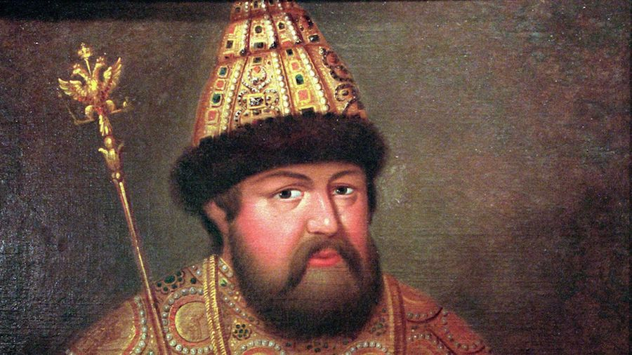
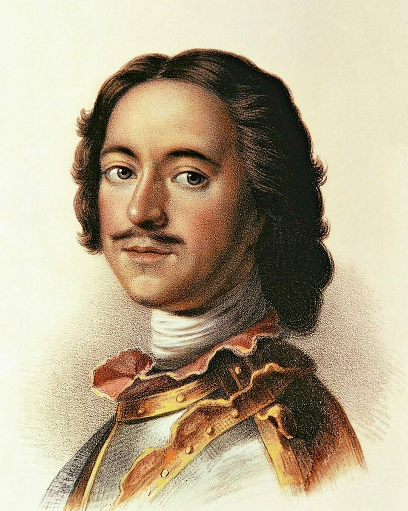
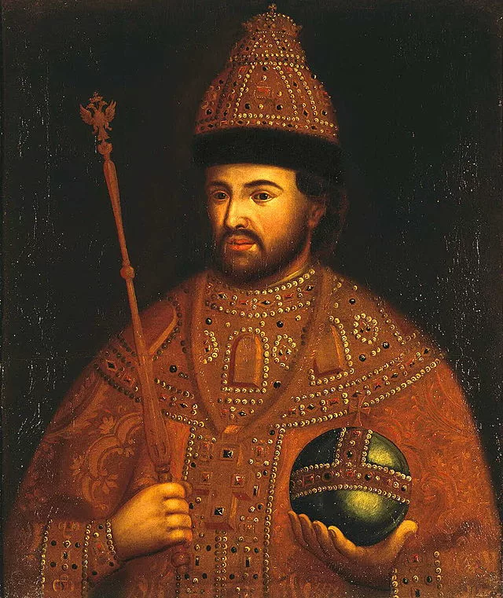
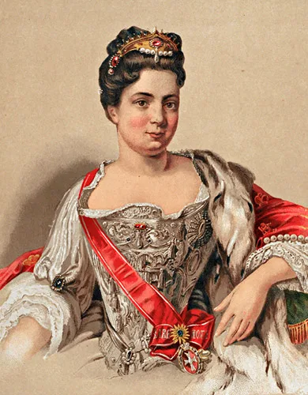
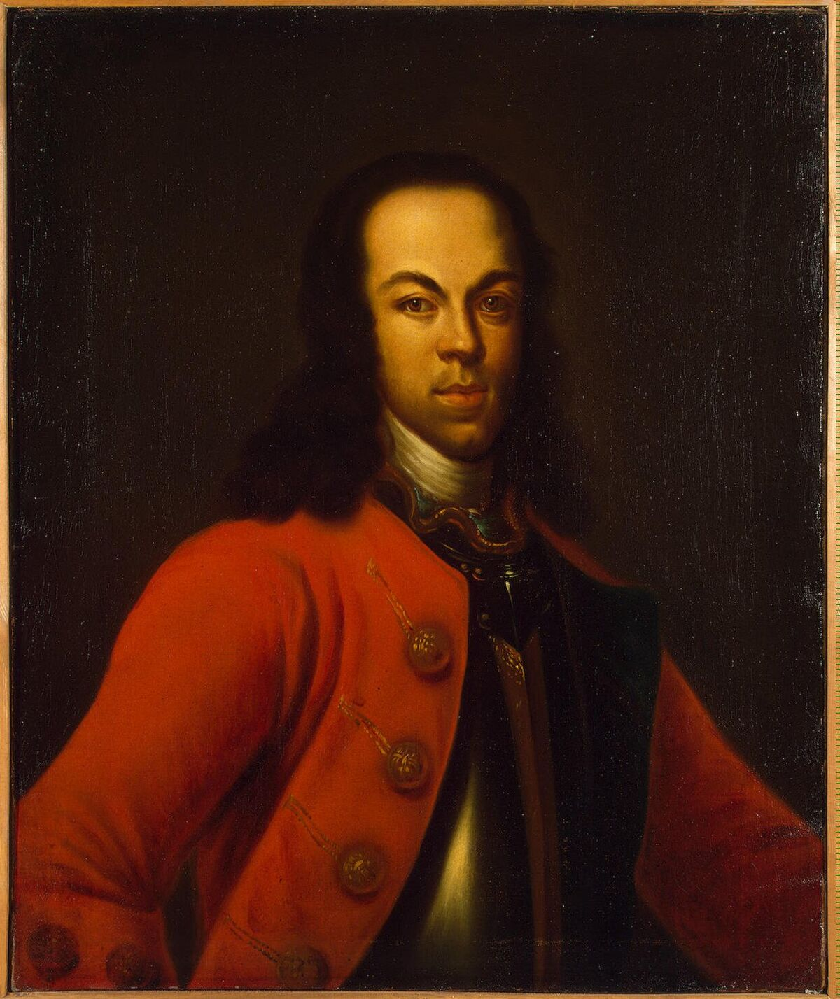
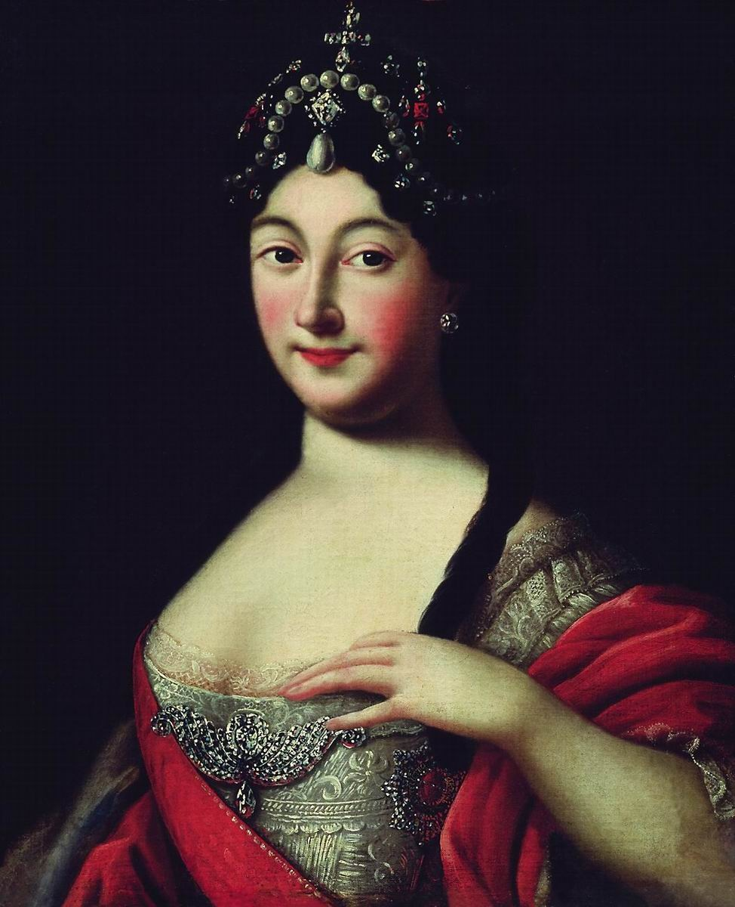
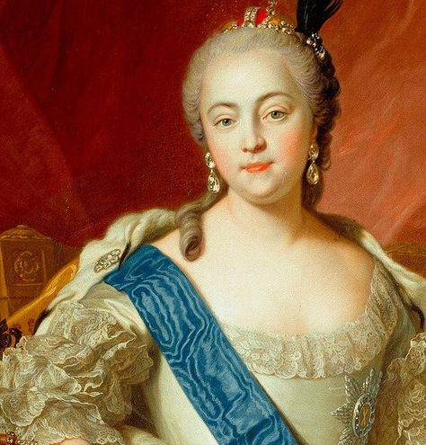
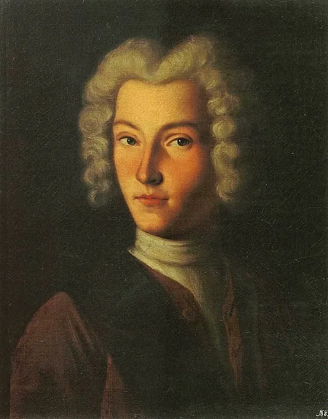
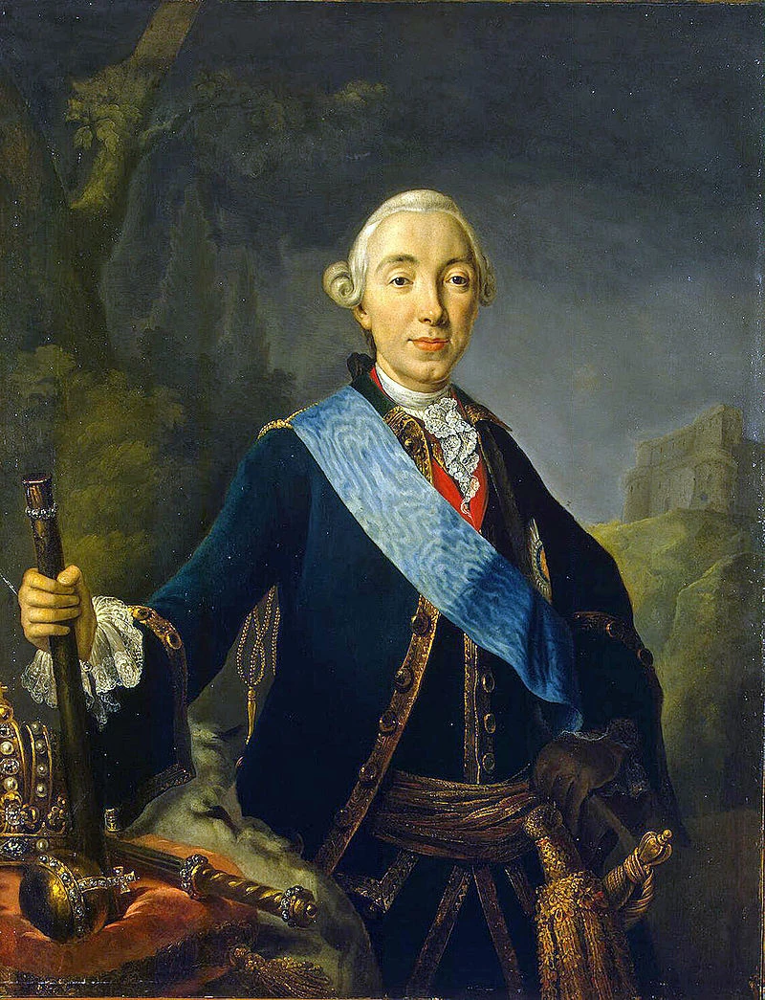
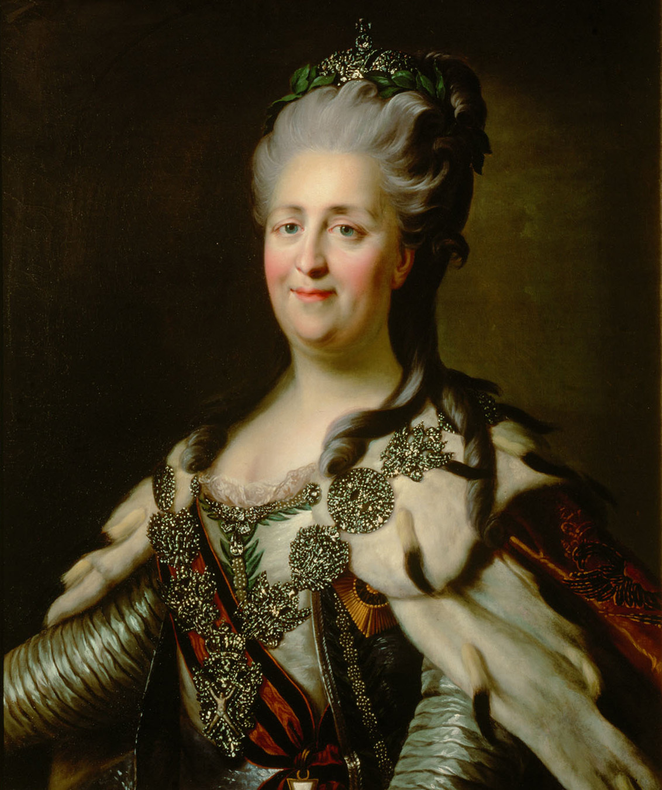
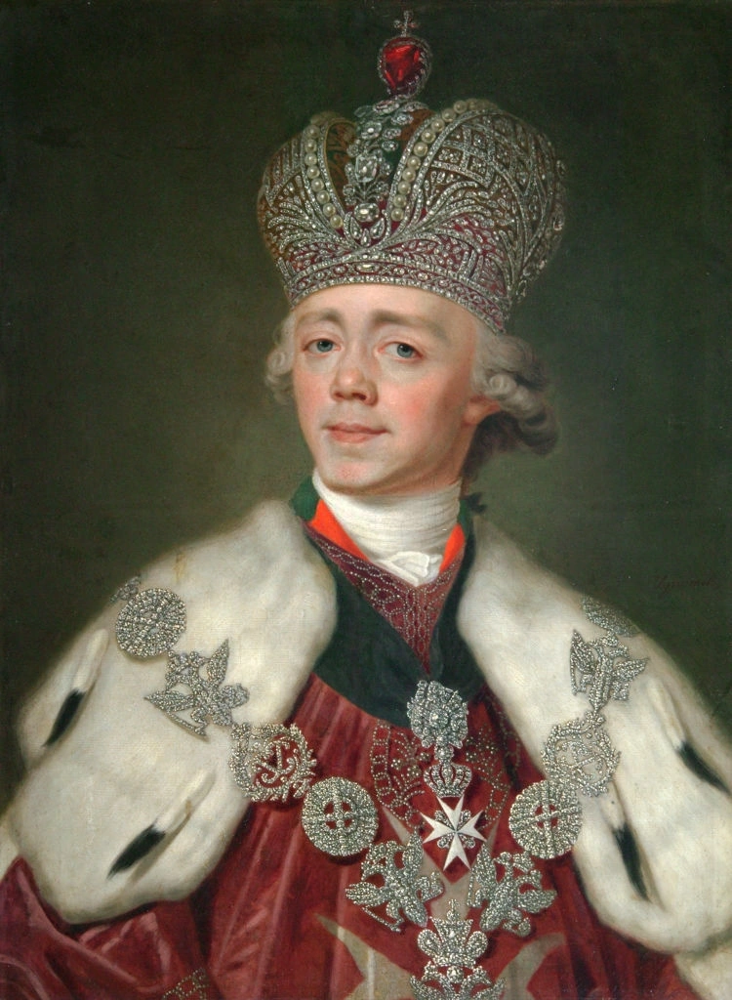
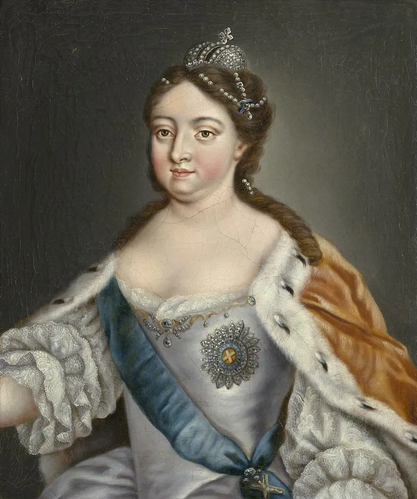
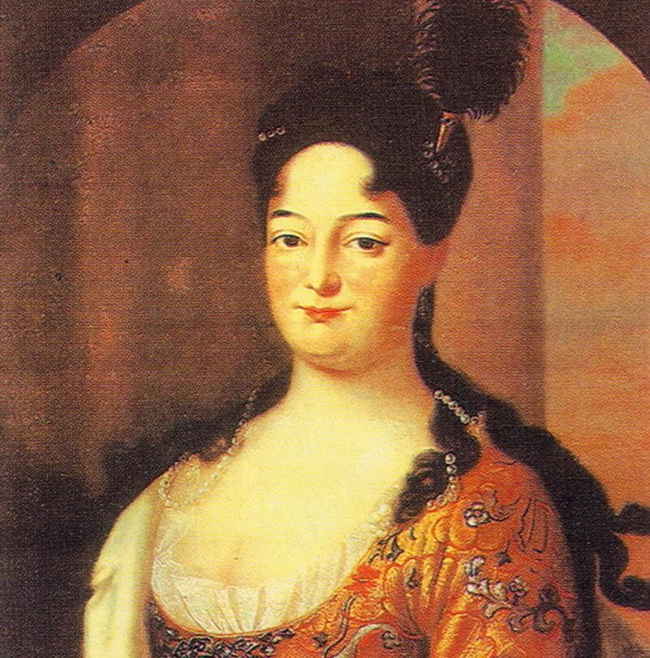
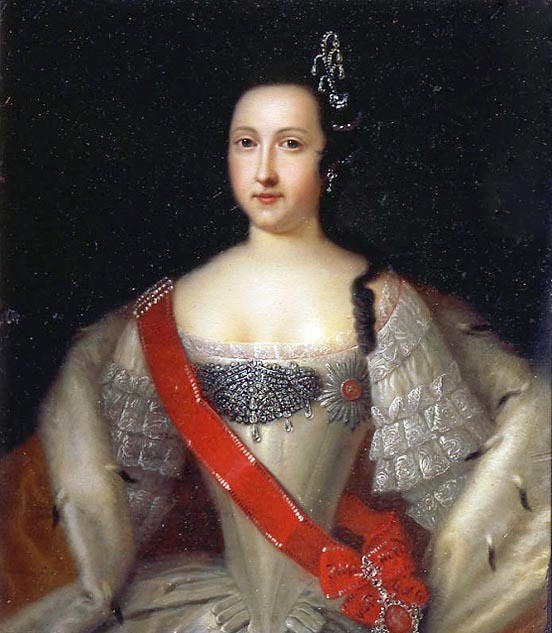
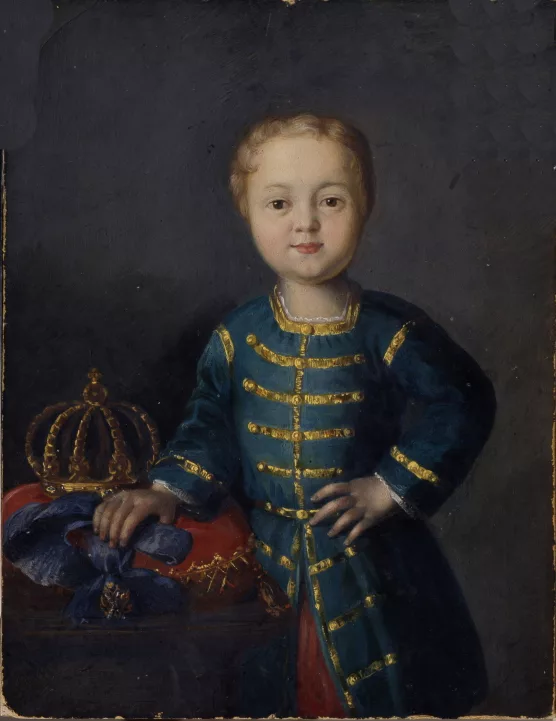
У каждого правителя — отдельный дэшборд с местом под портрет, датами жизни и правления и краткой характеристикой внешней политики.
Северная война со Швецией (1700–1721); Ништадтский мир закрепил за Россией выход к Балтийскому морю и изменил её положение в Европе.
Продолжала внешнеполитический курс Петра I; в 1726 году Россия сблизилась с Австрией в рамках Венского союза.
Самостоятельный внешнеполитический курс был ограничен малолетством императора и влиянием придворных группировок; крупных войн при нём не велось.
Участие в войне за польское наследство (1733–1735) и русско-турецкой войне (1735–1739); Белградский мир завершил последнюю кампанию.
Короткое правление проходило при регентстве; внешняя политика продолжала основные направления предшествующего периода.
Русско-шведская война (1741–1743); участие в Семилетней войне (1756–1763), включая кампанию 1760 года и занятие Берлина русскими войсками.
Заключил Петербургский мир 1762 года с Пруссией и вывел Россию из Семилетней войны; действия императора резко изменили курс последних лет войны.
Русско-турецкие войны 1768–1774 и 1787–1791; присоединение Крыма в 1783 году; три раздела Речи Посполитой в 1772, 1793 и 1795 годах.
Участие в антифранцузской коалиции; итальянский и швейцарский походы Суворова; к 1800–1801 годам — отход от прежнего курса и сближение с Францией.
Последовательность правителей позволяет увидеть, почему XVIII век стал периодом частой смены монархов и борьбы придворных группировок.
Реформы, Северная война и создание новой модели государственного управления. В 1722 году принят Устав о наследовании престола.
Начало новой системыПосле смерти Петра I престол перешёл к его супруге; вопрос о преемственности остался ключевым для дальнейшей истории.
Династическая преемственностьИмператор-юноша, правление при усилении придворных группировок. После его смерти мужская линия потомков Петра I прервалась.
Смена династической линииНа престол приглашена Верховным тайным советом, но восстановила полномочия самодержавного монарха. При ней продолжилась активная внешняя политика.
Усиление самодержавияМладенец-император; фактическое управление осуществлялось регентами. Правление завершилось новым дворцовым переворотом.
РегентствоДочь Петра I заняла престол в результате переворота и продолжила некоторые государственные и внешнеполитические направления петровской эпохи.
Возвращение линии Петра IПлемянник Елизаветы; краткое правление сопровождалось сменой внешнеполитического курса и завершилось переворотом 1762 года.
Поворот курсаКрупный период территориального расширения России, войн с Османской империей и участия в разделах Речи Посполитой.
Имперский периодИзменил порядок престолонаследия в 1797 году, закрепив принцип наследования по закону и старшинству в мужской линии.
Новая система наследованияОтветы на вопросы к тексту Устава о наследии престола от 5 февраля 1722 года.
Пётр I отказался от автоматической передачи престола только по старшинству и установил право действующего монарха назначать наследника по собственному решению.
Отменил обязательное наследование престола по старшинству и предоставил правящему монарху право самому назначать наследника, а при необходимости менять своё решение.
Пример царевича Алексея; библейская история Иакова и Исава; примеры из истории русских государей; аналогия с выбором наследника в имуществе; необходимость передать государство достойному правителю.
Пётр I исходил из того, что старший по рождению наследник не обязательно окажется способным управлять государством. Поэтому, по его замыслу, выбор должен зависеть от способности и достоинства правителя.
Материалы работы собраны в единой структуре: от родословной и хронологии до внешней политики и текста Устава 1722 года.
Портрет автора, сведения об обучении, преподавателе и теме практического задания.
Родственные ветви Петра I и Ивана V, потомки и связи между династическими линиями.
Даты жизни и правления, а также ключевые события внешней политики.
Последовательность смены правителей от Петра I до Павла I.
Ответы на вопросы по тексту Устава о наследовании престола.
Северная война, войны с Османской империей и Швецией, Семилетняя война, разделы Речи Посполитой и антифранцузская коалиция.